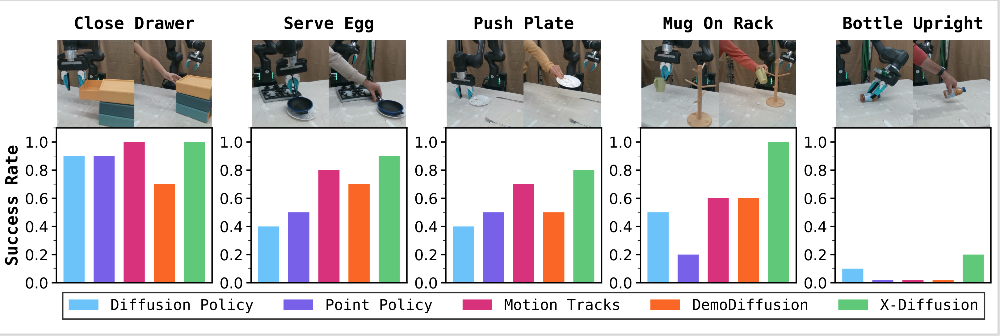

We convert human videos into robot-aligned state-action pairs using 3D hand-pose estimation and lightweight retargeting, and reduce the visual gap with object masks and keypoint overlays.
Adding noise suppresses embodiment-specific details while preserving task intent. We use a human-vs-robot classifier to find the earliest noise level where human actions are indistinguishable from robot actions and treat them as safe supervision.
We compare X-Diffusion with FILTERED (robot-verified human demos only), NAIVE (all human data), and ROBOT (robot-only) and find consistent gains on every task.

@misc{pace2025xdiffusion,
title = {X-Diffusion: Training Diffusion Policies on Cross-Embodiment Human Demonstrations},
author = {Pace, Maximus A. and Dan, Prithwish and Ning, Chuanruo and Bhardwaj, Atiksh and Du, Audrey and Duan, Edward W. and Ma, Wei-Chiu and Kedia, Kushal},
note = {Manuscript under review},
year = {2025}
}